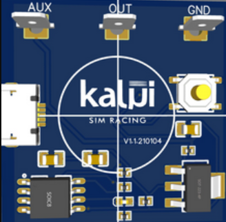
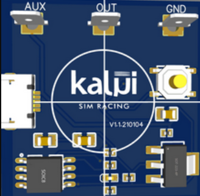
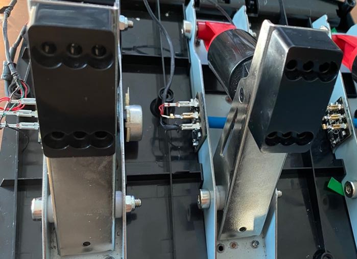

Sensor hall para os pedais dos volantes Logitech G29 e G920
Desenvolvido para melhorar a precisão do seu pedal Logitech G29/G920, o sensor hall KALUI SIM RACING pode ser usado tanto por quem joga nos consoles (PS5/PS4 e PS3) quanto por quem joga no computador.


O Sensor
O sensor hall da KALUI SIM RACING é a solução definitiva para resolver as falhas que ocorrem com frequência nos pedais do volante Logitech G29/G920. Este sensor substitui os potenciômetros dos pedais do G29/G920, aumentando a sua precisão e durabilidade.
 



Precisão
Melhora a precisão do pedal, eliminando completamente as falhas. Opera internamente com 12-bits de resolução. Mesma tecnologia utilizada nos pedais topo de linha.
Durabilidade
Apresenta maior durabilidade comparado ao potenciômetro original. Dispensa manutenção (limpeza), por não possuir contato mecânico.
Compatibilidade
Compatível com os consoles PS5/PS4 e PS3, sem a necessidade de utilização de qualquer tipo de adaptador.
Fácil Instalação
Uma pequena peça contendo um imã é encaixada ao eixo do potenciômetro original. A placa eletrônica do sensor é fixada perpendicularmente ao eixo do potenciômetro, aproveitando um furo já existente no pedal. Os contatos elétricos são desconectados do potenciômetro e conectados ao novo sensor. Um novo cabo USB precisa ser inserido no pedal, para permitir a alimentação dos sensores. O cabo USB de alimentação deve ser conectado ao console ou à uma fonte de energia de 5v (hub USB, carregador de celular, etc).

Retrocompatibilidade
Pode ser instalado nos três pedais (acelerador, freio e embreagem), em dois pedais (e.g. acelerador e freio) ou em somente um pedal. Os demais pedais seguem funcionando normalmente com o potenciômetro. Você adquire a quantidade de sensores (1, 2 ou 3) que julgar necessário.